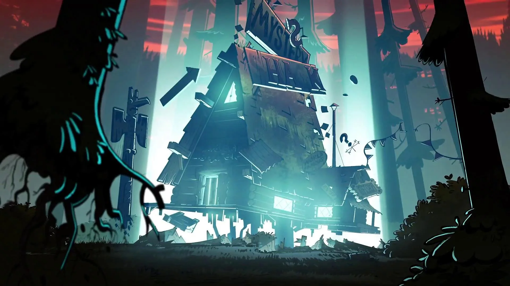

Gravity Falls Trilogy
The Gravity Falls Trilogy typically refers to the three journals that play a central role in the storyline of the animated series Gravity Falls. These journals are essential to uncovering the town’s mysteries and are integral to the show's plot. Here’s a breakdown of the trilogy
Overall Importance
Written by Stanford Pines: The journals were written over the course of several years as Stanford, one of the central characters, researched the strange happenings in Gravity Falls. The trilogy not only serves as his scientific record but also as a personal account of his increasing obsession with the supernatural. Guide for Dipper: In the series, Dipper Pines discovers Journal 3, and it becomes his primary resource for investigating the town’s oddities. Each journal serves as a tool for revealing the deeper mysteries of the show. Connection to Bill Cipher: The journals are also integral to the show’s central conflict involving Bill Cipher, a powerful and manipulative demon. The journals contain Stanford's research on Bill, helping Dipper and Mabel ultimately defeat him.
Key Themes
Key Themes in the Trilogy: Mystery and Discovery: The journals represent the scientific and adventurous spirit of Stanford and Dipper. Each volume uncovers new layers of Gravity Falls' mysteries. Obsession and Isolation: Stanford's deepening obsession with the mysteries leads to his isolation, a theme explored throughout the show, especially in his estranged relationship with his brother Stanley Pines. Family and Legacy: Ultimately, the journals tie into the larger themes of family and legacy, as Stanford's work impacts not only the town but his own family, particularly the dynamic between the Pines brothers and the role Dipper and Mabel play in preserving their family bond.
